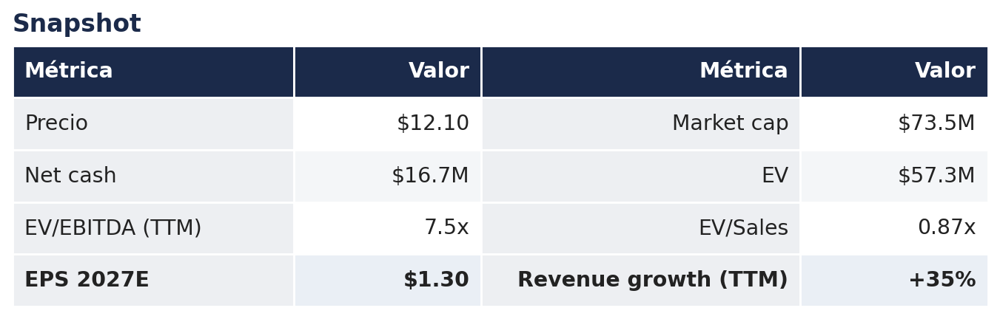
La oportunidad, en una página
Leatt cotiza a $12.10. Mi fair value ponderado por probabilidad es de cerca de $22, o sea alrededor de +84% de upside. La acción está barata por dos razones que no tienen nada que ver con el negocio: nadie la cubre, y opera como $18,000 dólares al día, así que ningún fondo la puede comprar.
Lo que de verdad te llevas por ese precio: una empresa sin deuda, con $16.7M de net cash (como 23% de toda la empresa), creciendo revenue +35% en los últimos doce meses mientras sus competidores se encogen, a 7.5x EV/EBITDA y como 9.3x el EPS del próximo año.
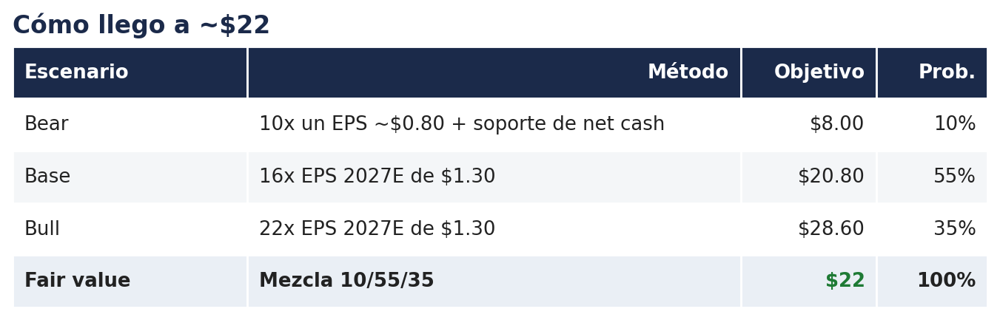
Mezcla los tres a 10% bear, 55% base y 35% bull y caes en cerca de $22, como +84% arriba de hoy. Y ese EPS de $1.30 no es agresivo, es la propia guía de palanca operativa del management (ver Pilar 3). Todo el caso bajista sigue anclado por $16.7M de net cash.
Una nota macro, en simple: en un mundo de tipos altos, una empresa chica que sigue creciendo y generando caja es justo el tipo de nombre que más se premia cuando los tipos por fin bajen.
1. ¿Qué hace la empresa?
Leatt es una empresa que vende ropa y artículos de protección (cascos, body armor, neck braces, botas, chamarras, guantes, goggles y accesorios) para riders de moto off-road, bici de montaña, adventure (ADV) y otros deportes. No vende el vehículo, vende lo que el rider trae puesto. Eso importa: en lugar de venderte la máquina de $10,000 dólares que compras cada varios años, Leatt te vende el casco de $300 a $800 y el equipo que reemplazas mucho más seguido porque se desgasta o se destruye en una caída. Es una apuesta de picos y palas sobre andar en moto y bici, con economía de recompra.
Fundada en 2005 en Ciudad del Cabo, Sudáfrica, por el Dr. Christopher Leatt, el médico que inventó el neck brace. El fundador sigue como Chairman y jefe de I+D; el día a día lo dirige el CEO Sean Macdonald (que además es Presidente y CFO). Fabrica sobre todo en China (agregó Tailandia, Camboya y Bangladesh en 2025) y vende por unos 61 distribuidores internacionales, una red de dealers en EE.UU. que crece, y un canal directo al consumidor que crece rápido. Sitio de la empresa: leatt.com.
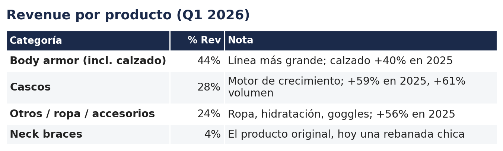
Canales: distribuidores internacionales ~68-72%, dealers de EE.UU. ~24%, DTC ~8% (los dos de mayor margen, dealers y DTC, crecieron +30% y +49% en Q1 2026). Geografía: internacional ~72-76%, EE.UU. ~24-28%.
2. Los productos: qué crece y por qué la gente compra Leatt
Esto importa para toda la tesis, así que vale la pena ser específico. Leatt reporta revenue por producto, y el crecimiento lo jalan las categorías más difíciles de saltarse.
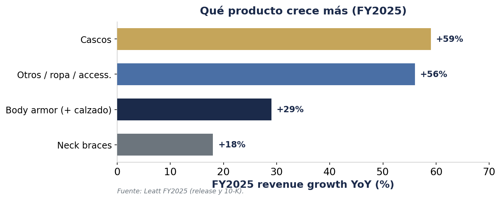
Cascos (+59%) y ropa/otros (+56%) crecieron más rápido en 2025, body armor incluyendo botas (+29%) es la línea más grande y estable, y el neck brace de siempre (+18%) hoy es chico. La lectura importante para el modelo: el crecimiento más fuerte está en cascos, que además es una de las compras menos saltables. O sea el crecimiento viene de la parte durable del negocio, no de la frágil.
Por qué un rider elige Leatt sobre Fox, Alpinestars o Dainese
- El neck brace es su producto insignia. Ellos inventaron la categoría; los riders dicen que da "ese poquito más de protección" y es más ajustable que Alpinestars, y los sitios de review lo ponen como el mejor en general. Sus chest protectors están hechos para embonar con el brace, así que comprar una pieza Leatt jala la siguiente (Braap Academy, Vital MX).
- Se posicionan como "premium-value": tecnología y certificaciones de primer nivel, preciadas al nivel o un poco debajo de los líderes. La knee brace fue la más barata en un test comparativo; el casco MTB convertible con certificación DH cuesta $350; el casco ADV cuesta como Klim y Arai pero viene con goggles, Pinlock y mica extra (OutdoorGearLab).
- Sus botas de moto son llamadas "las más cómodas de sacar de la caja" con el mejor feel en la moto. La debilidad honesta: la durabilidad de las botas a largo plazo y las knee braces reciben reviews mixtos, y en los rankings de laboratorio de cascos Leatt todavía no está en el primer nivel vs Fox/POC (Keefer Inc).
- En resumen: la gente compra Leatt por protección-por-dólar y por el ecosistema del neck brace, no por status de logo. Ese es justo el cliente que quieres en una crisis.
Por qué aguanta si la economía se pone peor
Esto es gasto discrecional de hobby, así que la preocupación justa es: si se aprieta el dinero, la gente deja de comprar. Cierto, pero no parejo. Los riders reemplazan el equipo de seguridad pase lo que pase, y estiran lo demás. La regla del sector es directa: cambia tu casco después de cualquier caída fuerte y cada ~5 años de todos modos, y prioriza casco y botas porque son los que hacen el trabajo de protección. Donde la gente ahorra es en jerseys y pantalones, que con gusto compran usados o aguantan otra temporada.
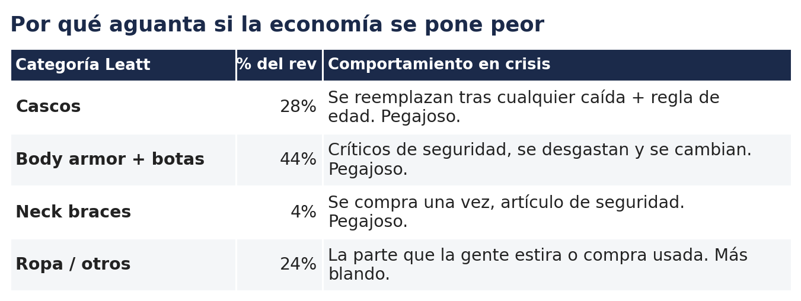
Súmalo y como tres cuartas partes del revenue de Leatt es equipo crítico de seguridad que la gente reemplaza de todos modos, y solo como una cuarta parte (ropa/accesorios) es la parte comprimible. Por eso me siento cómodo con que el revenue del caso base aguante aunque el consumidor se debilite.
3. La tesis
El mercado ve una microcap ilíquida de OTC que apenas dejó atrás comparativas fáciles. Lo que muestran los datos es una empresa sin deuda, con net cash, que creció +41% en 2025 mientras los canales de powersports y bici todavía se encogían, y que hoy gana un margen operativo de como 8%, apenas un tercio del ~23% que ganó en su pico de 2021. O sea, la recuperación de la rentabilidad está casi toda por delante.
Pilar 1: el ciclo giró, y Leatt toma cuota mientras gira
Dos puntos honestos primero. Uno, parte de por qué Leatt "bate" es que sus comparativas eran fáciles: 2024 fue un año malo, así que crecer contra eso se ve grande, y esas comparativas fáciles ya se están poniendo más duras (Q2 2026 compara contra un trimestre de +61%). Dos, y más importante, el crecimiento es real y está tomando cuota, porque pasa mientras el resto de la industria sigue abajo.
¿Qué es el destock? En 2020-2021 el deporte tuvo un boom, y los distribuidores, con miedo a quedarse sin producto, ordenaron mucho más de lo que podían vender. Cuando la demanda se normalizó en 2023-2024 quedaron atorados con exceso de inventario, así que dejaron de ordenar, y las ventas cayeron para todos los fabricantes de la industria. Eso ya se limpió en gran parte. La prueba de que la industria todavía no está sana: las ventas del segmento de bici de Fox Factory cayeron 8.7% en Q1 2026 (Bicycle Retailer), y Polaris le dijo a los inversionistas que espera "un entorno de retail relativamente plano" en 2026 (call Polaris Q1 2026). Leatt creció +27% justo en ese contexto, y así se ve tomar cuota.
Otras dos señales de la industria dicen lo mismo. La división de bici de Shimano creció apenas +3% en 2025, su primer crecimiento desde 2022 (Shimano), y Fox Factory está guiando una caída de ventas para 2026 y le dijo a los inversionistas que "no cuenta con una recuperación del mercado" (Fox Q4 2025). O sea, toda la industria apenas despega del fondo, y Leatt crece varias veces más rápido que ella.
Puedes ver el giro en las propias palabras de la directiva. En Q2 2023 todavía hablaban de "niveles altos de inventario de la era Covid que se siguen digiriendo"; para Q4 2025 ya era "crecimiento interanual por sexto trimestre consecutivo tras el exceso de inventario post-COVID". La misma empresa, el ciclo volteándose.
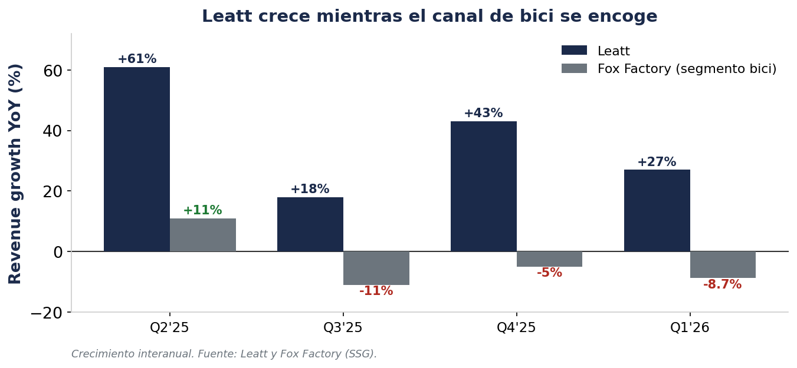
"Strong revenue growth continues as global demand for our products fueled robust reordering patterns."
— Sean Macdonald, CEO — call Q1 2026
Pilar 2: EE.UU. y ADV son la siguiente etapa de crecimiento
- EE.UU. es apenas ~24-28% del revenue aunque es el mercado off-road más grande del planeta. Las ventas por dealer crecieron +30% y las directas al consumidor +49% en Q1 2026, con un nuevo líder de marketing contratado justo para empujar EE.UU.
- ADV (adventure touring) es el tipo de moto que más crece en el mundo. Leatt construyó una línea completa ADV de ropa, cascos y botas que la directiva dice que sigue superando expectativas, con más producto en camino.
- El canal directo al consumidor (DTC) es el ganador silencioso: creció cada año desde 2021, de ~$2M a ~$5M, y nunca cayó ni siquiera durante el destock. La directiva dice que además deja el mejor margen. Es el crecimiento de mayor calidad del negocio.
- El casco Cardo Venture de $799 (comunicación integrada, lanzando a fin del verano 2026) sube los precios y muestra a la empresa subiendo de gama.
"Dealer direct sales increased by 30%, as our reorganized and re-energized moto and MTB domestic sales force continues to develop and build a strong, sustainable and committed dealer network."
— Sean Macdonald, CEO — call Q1 2026
Pilar 3: apalancamiento operativo, y cómo llegan de verdad los márgenes
El gross margin ya está de vuelta en 44%. El resto de la historia es la base de costos. En 2025 el revenue creció +41% pero los costos operativos solo +12%, y ese hueco movió la utilidad operativa de una pérdida de -$3.0M a +$4.0M y el net income +248%. La empresa ganó 22.9% de margen operativo en el pico de 2021; hoy gana como 8%. Ese hueco es el camino por recorrer.
La directiva de hecho le puso número a esto. En la call del Q1 2025 el CEO dijo que pueden llegar a $70-80M de ventas sobre la base de costos de hoy (~$22M) sin un aumento importante de gasto. Eso es más o menos el revenue que modelo para 2026-27, y es justo la matemática de palanca operativa de arriba dicha en sus propias palabras.
"We can get to $70 to $80 million of sales without having significant increases in our OPEX... the OPEX that we're sitting on now, 20 to 21 to 22 million, I think we can still leverage that significantly."
— Sean Macdonald, CEO — call Q1 2025
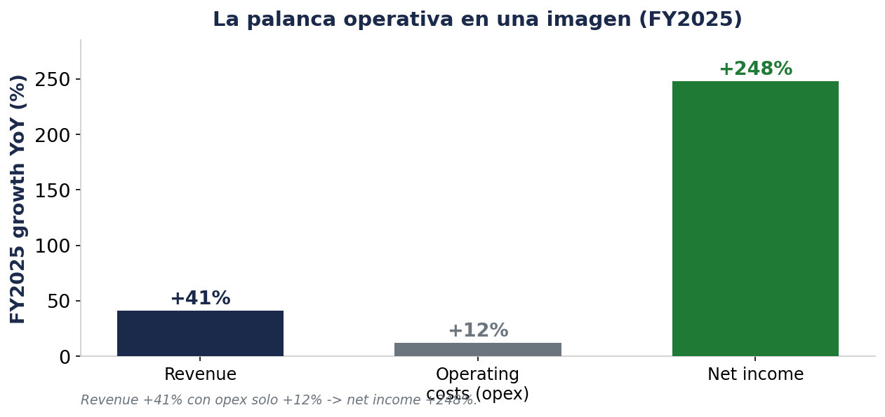
¿Cómo suben de verdad los márgenes? No porque el opex se congele, sino porque crece mucho más lento que el revenue. La directiva guio los costos a crecer ~12% en 2026 mientras el revenue crece ~20%+, así que cada dólar extra de venta cae en buena proporción a la utilidad. Qué vigilar, trimestre a trimestre:
- Crecimiento del opex vs crecimiento del revenue. Mientras el revenue crezca más rápido que la guía de ~12%, los márgenes se expanden. Si el opex empieza a igualar al revenue, la tesis se atora. (El opex subió bastante en Q1 2026, +23%, pero fue por inversión en el equipo de EE.UU. más dos partidas contables — mayor depreciación no-cash y un swing en bad debt — no por deterioro de márgenes; el revenue creció +27%, más rápido que el opex.)
- Que el gross margin se sostenga en 43-44%. Eso es lo que convierte ventas extra en utilidad real.
- El camino de regreso hacia el margen operativo de ~15-20% de antes conforme el revenue sube hacia y más allá del pico previo de $76M sobre una base de costos apenas mayor.
"Total operating costs increased by 12%... Net income for the year 2025 increased by 248% to $3.26 million."
— Sean Macdonald, CEO — call FY2025
Pilar 4: un balance que hace sobrevivibles los errores
- $16.7M de net cash, como 23% del market cap, y cero deuda de largo plazo. Current ratio 8.2x.
- Solo el operating cash flow de Q1 2026 fue $4.55M. El negocio fondea su propio crecimiento, inventario y recompras.
- La primera recompra de su historia arrancó en 2025, chica por ahora porque la acción es muy ilíquida. La caja podría fondear una recompra mucho mayor o un dividendo especial mañana.
- El número de acciones sigue casi plano en una década, o sea no diluyen al accionista.
Pilar 5: el descuento es iliquidez, no un negocio roto
- Cero cobertura de analistas. Sin precio objetivo, sin consenso. El único research externo es una nota de MS Cliff Notes (#140, abril 2026) que la agregó a su índice de microcaps (link).
- Se operan en promedio como 1,500 acciones al día (unos $18,000 dólares), y es volátil. Ningún institucional puede armar posición, así que el múltiplo carga un descuento que no tiene nada que ver con los fundamentales.
- Mientras tanto los números mejoraron de corrido: +35% revenue, 44% gross margin, de vuelta a utilidad. La brecha cierra con más de lo mismo, y un posible uplisting sería el gran detonador (nada anunciado aún).
4. Los números
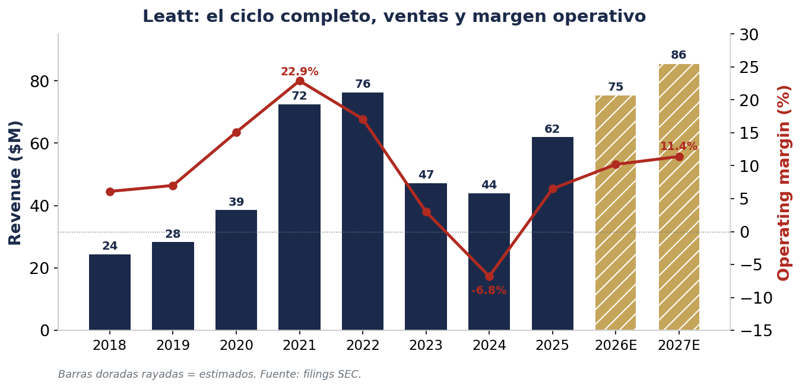
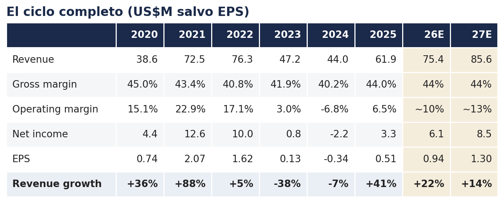
Las columnas sombreadas (26E, 27E) son mis estimados, conservadores en costos.
La foto es simple: un boom impulsado por estímulos hasta un EPS pico de $2.07 en 2021, un -42% por destock hasta una pérdida en 2024, y una recuperación genuina ahora. Hoy el revenue sigue ~19% debajo del pico anterior y los márgenes son un tercio del pico. Eso es el setup, no el techo.
Cómo llegamos a ~$86M en 2027: ventas por segmento
Leatt reporta el revenue por producto, así que en vez de adivinar un total, crezco cada categoría y las sumo. Los cascos crecen más rápido (lo menos saltable y donde más cuota pueden ganar), body armor es la base grande y estable, la ropa crece pero es lo más discrecional, y los neck braces son chicos. Suma los cuatro y caes en ~$75M en 2026 y ~$86M en 2027.
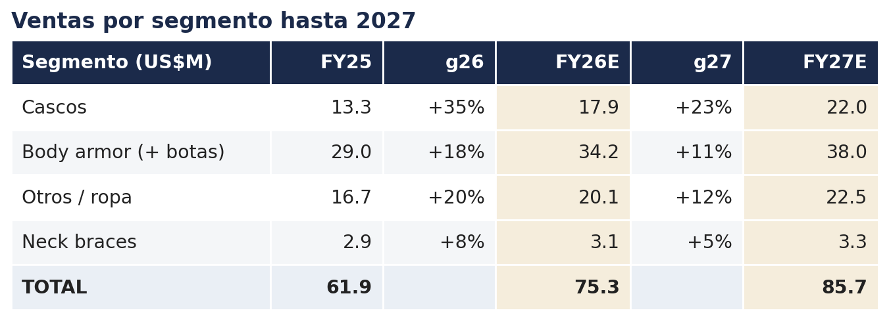
Esta es la parte justificada del modelo: el revenue se construye segmento por segmento, no sale del aire. Un límite honesto: Leatt reporta un solo segmento operativo, así que solo publica un margen bruto consolidado (~44%) y nunca un margen por producto (ver la nota de segmentos del 10-Q). No podemos saber desde los filings si la ropa deja más o menos que los cascos. Dejo el margen bruto en el 44% consolidado y modelo la palanca operativa sobre los costos totales.
5. Valuación
Esto lo valúo con EPS, porque prefiero invertir en empresas que ya son rentables, todo se vuelve más fácil cuando hay utilidad real a la cual ponerle un múltiplo. Lo contrasto con EV/EBITDA y EV/FCF, y puedo apoyarme en EV/EBITDA aquí porque el EBITDA se convierte en free cash en un ~60%.
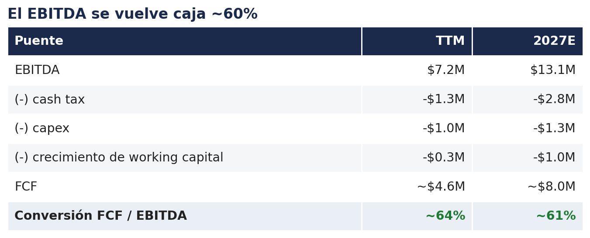
Como 60-64% del EBITDA se vuelve free cash, y la fuga principal es el working capital, que es Leatt comprando inventario para fondear crecimiento (un buen problema). En base madura estaría más cerca de 68%. Eso alcanza para justificar EV/EBITDA como ancla.
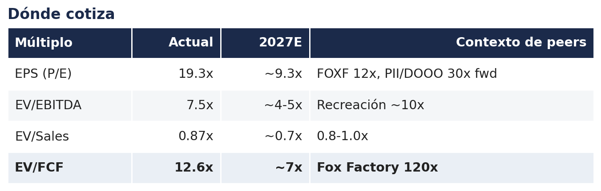
Escenarios y fair value:
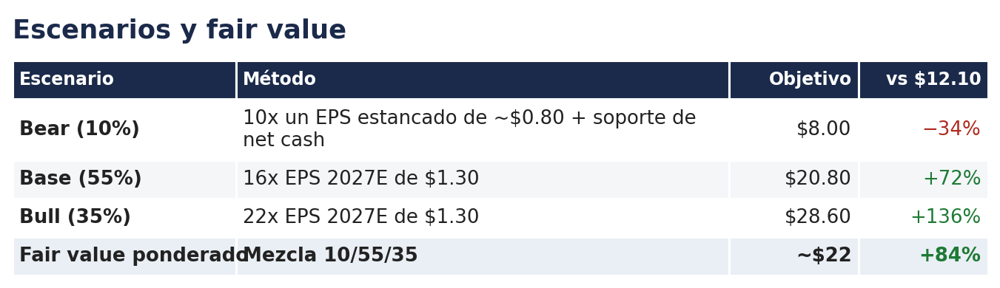
Ponderado, eso da cerca de $22, o como +84% desde $12.10. El supuesto que carga todo el peso es el EPS de $1.30, que es la propia guía de palanca del management, no mi optimismo. El caso bear sigue con piso en $16.7M de net cash.
El colchón de caja: con 6.23M de acciones, los $16.7M de net cash son como $2.60 por acción, cerca del 21% del precio de hoy. Incluso en el caso bear de $8, ~$2.60 es caja, así que en realidad pagas ~$5.40 por un negocio rentable y sin deuda.
6. Checklist Micro Capo: 7.0 / 10
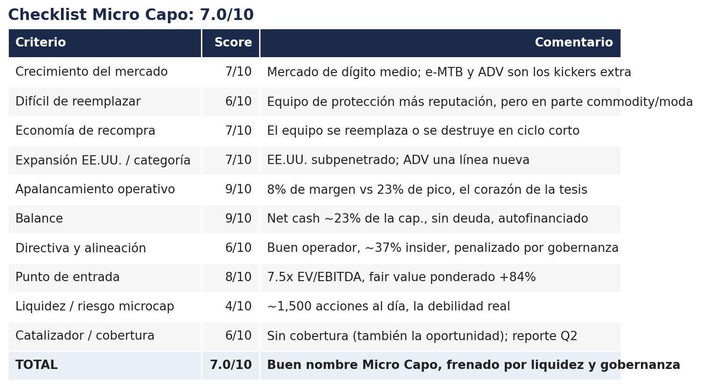
7. Catalizadores
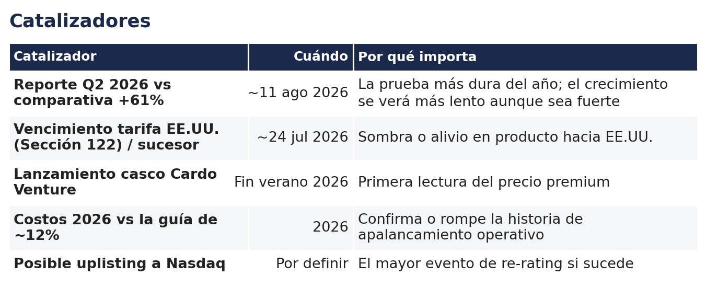
8. Riesgos
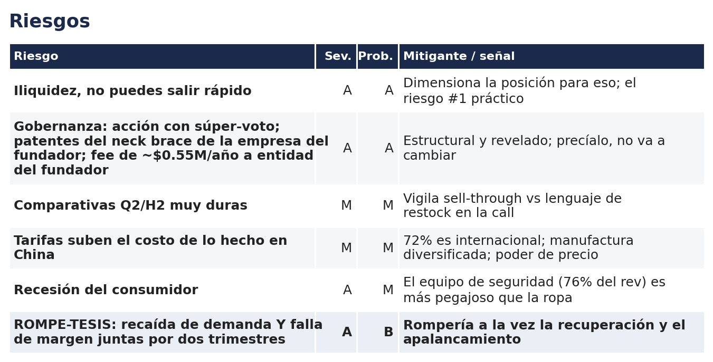
9. Por qué la tengo
Compré esto a principios de junio 2026 en $12.00. El setup es simple: una empresa de equipo de protección con mucha caja, saliendo del fondo de un ciclo malo, con seis trimestres seguidos de crecimiento, gross margins de vuelta en 44%, y mucho camino por recorrer en márgenes. Es un negocio aburrido, equipo de protección para gente que anda en moto y bici, y a 7.5x EV/EBITDA está barata.
Lo que me mantiene dentro es que lo peor ya pasó. Aguantaron el destock, se comieron la pérdida, mantuvieron el balance limpio, y salieron del otro lado tomando cuota. La pondero 10% bear, 55% base, 35% bull, lo que me da cerca de $22, y el downside está protegido por $16.7M de net cash. La caja está ahí, la demanda está regresando, y no le veo mucho que pueda salir mal de aquí en adelante.
Una cosa que hay que tener clara: la acción es súper ilíquida, y eso hay que tomarlo en cuenta tanto a la hora de entrar como de salir. Y sobre la propiedad, antes me gustaba mucho que los insiders tuvieran mucha participación, pero cada vez me gusta menos. Me ha pasado en otras compañías que los insiders tienen tanto que lo ven como negocio familiar y dejan de preocuparse por el accionista de afuera. Prefiero que no tengan tanto. Aquí no creo que sea un foco rojo, pero vale la pena tenerlo presente.
10. Conclusión
El mercado está preciando una microcap dormida de OTC. En realidad es una empresa de equipo de protección tomando cuota mientras su industria se recupera, ganando un tercio de sus márgenes pico con todo el camino por delante, a 7.5x EV/EBITDA y sin que nadie la mire.
Y la parte que la protege: como tres cuartas partes de lo que vende es equipo de seguridad que la gente reemplaza pase lo que pase. Los cascos y las botas no esperan a que la economía esté buena. Por eso creo que lo peor ya quedó atrás y ~$22 es el número justo.
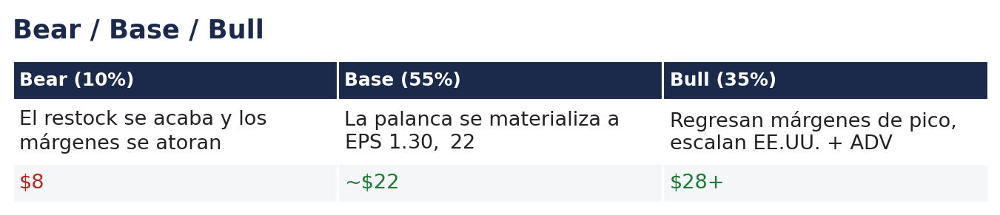
Fuentes
- SEC EDGAR (filings LEAT)
- Transcript call Q1 2026
- Transcript call Q4/FY2025
- Comunicado resultados FY2025
- Comunicado resultados Q1 2026
- Datos de mercado (stockanalysis.com)
Aviso legal. Esto es mi opinión personal con fines educativos. No es asesoría de inversión ni recomendación de compra o venta. Mantengo una posición larga en LEAT y puedo cambiarla sin aviso. Las microcaps son riesgosas, incluida la pérdida total. Haz tu propia tarea.